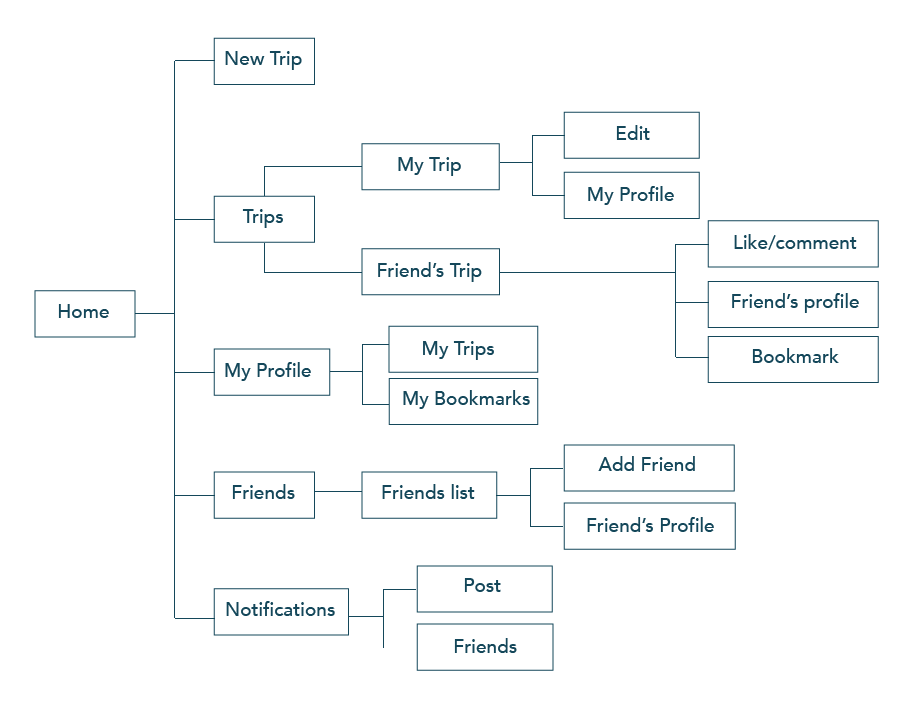

Overview
Nomads is a responsive website for travelers to share their experiences and follow their friends along theirs. Create posts with photos and text, tagging your location in the globe. Add tags and also share it among other media social channels.
Target Audience
Travelers and people who like following people's travel adventures.
Problem
Keeping travel memories into one place. Sharing travel experiences in a platform specific for travelers.
Solution
A responsive website that allows people to follow friend's travels, and also post their own experiences adding location, images, text and tags.
Information Architecture
Visual Development
Moodboard
Logo Development
Technology
For the app structure, I used HTML, CSS and JQUERY. I avoided using any boilerplate like Bootstrap so I could have more freedom of experimenting without extra weight. For the camera/file functionality, HTML input element, and HTML geolocation. To create the map with locations, I’m using Google Maps and Places API (part of Google Maps). The content on the map was rendered dynamically via JSON and JQUERY. Handlebars.js is a template library and used it to create the complex grid, which is also rendered dynamically. Finally, for the responsive pages, I used CSS Media Queries, defining initially 2 viewports: phone or rest (desktop or ipad initially have the same design/code).
User Testing
I conducted several user testing sessions along my thesis development. Initially paper prototype to define concepts, laterInvision prototype to test user flows and navigation and finally a testing with the live code to ensure everything was intuitive and users understand the app.User Testing was crucial in discovering holes in my UX experience and in rethinking some features. For example, the notification flow was something I didn’t consider seriously till the users pointed it out.